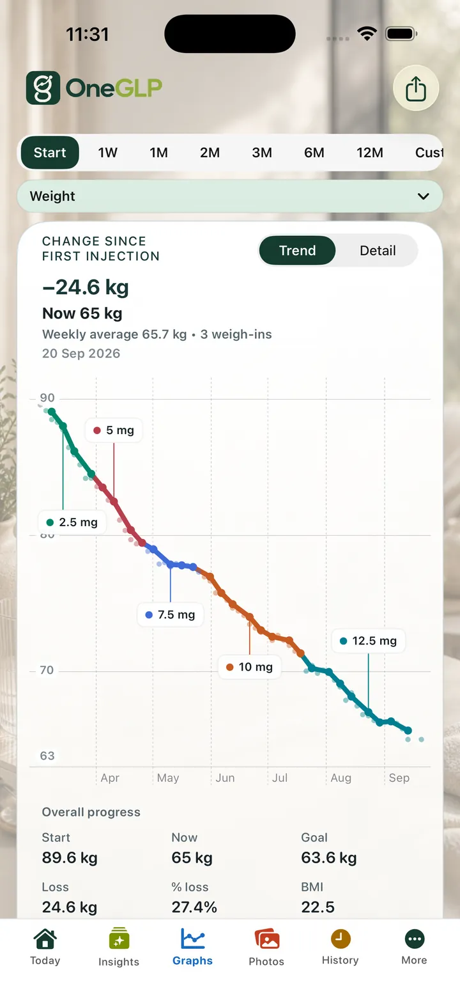
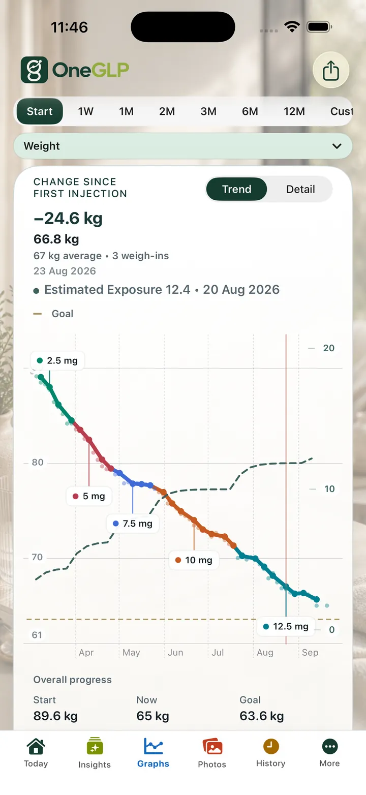
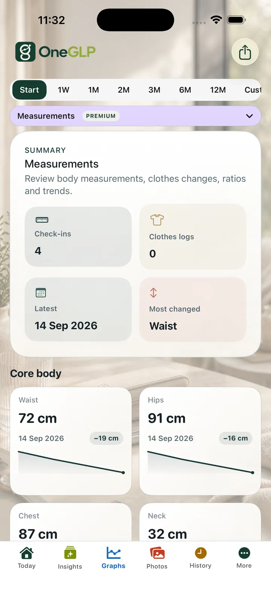

Historique du poids
Saisie manuelle ou Apple Health en lecture seule
Vous pouvez conserver des mesures saisies vous-même ou autoriser OneGLP à consulter votre poids dans Apple Health.
GLPzy s’appelle désormais OneGLP.
L’accès à Apple Health est facultatif et limité aux autorisations que vous accordez. OneGLP importe l’historique du poids et la taille, puis lit les résumés de composition corporelle, de mouvement, d’entraînement, de calories, de protéines et d’eau en lecture seule. Aucune donnée n’est réécrite.
Vous pouvez conserver des mesures saisies vous-même ou autoriser OneGLP à consulter votre poids dans Apple Health.
Les graphiques de poids peuvent être relus avec les doses, les symptômes, la nutrition, les photos et les notes.
Les données de base peuvent être exportées en CSV et JSON; Premium propose des rapports supplémentaires.
OneGLP rassemble le poids et l'historique des doses GLP-1, symptômes, appétit, nutrition et photos de progression. Apple Health peut ajouter un historique du poids en lecture seule avec votre autorisation. Le but est de relire vos données personnelles, sans juger votre progression ou proposer un traitement.
Les mesures de poids sont plus faciles à replacer dans leur contexte lorsqu'elles sont présentées à côté des doses et des photos.
La saisie manuelle reste possible même sans autorisation Apple Health.
Limite médicale : Estimated Exposure est une estimation simplifiée et non une concentration sanguine mesurée. Elle ne remplace pas un conseil médical et ne doit pas guider une dose. Consultez la page Sécurité médicale.
| Nom de l'application | OneGLP |
|---|---|
| Plateformes | iPhone et iPad |
| Catégorie | Application privée de suivi GLP-1 |
| Données suivies | Doses, rappels, sites d'injection, poids, symptômes, appétit, nutrition, notes, photos et contexte Apple Health facultatif en lecture seule. |
| Compte | Aucun compte dans l'application n'est obligatoire pour le suivi de base. |
| Vie privée | Enregistrements locaux, sauf si vous choisissez de les exporter, partager ou restaurer à partir d'une sauvegarde. |
| Apple Health | Facultatif et en lecture seule : avec autorisation, poids, taille, glycémie, composition corporelle, activité, entraînements et nutrition. OneGLP n'écrit pas dans Apple Health. |
| Exports | CSV et JSON pour les données de base. Premium ajoute des rapports et résumés PDF destinés aux professionnels de santé. |
| Limite médicale | Uniquement pour le suivi personnel : ni avis médical, ni guide de dosage, ni dispositif médical, ni remplacement d'un professionnel qualifié. |
| App Store | OneGLP sur l’App Store |
Informations vérifiées le 16 juillet 2026. Éditeur : Steven Good.
Les informations officielles sur les médicaments et les instructions cliniques priment sur les indications de l'application.


Estimated Exposure est une estimation personnelle, pas une concentration sanguine mesurée et ne sert pas à choisir une dose.
Agrandir l’image
Oui. Le poids est conservé avec les informations sur les doses et les symptômes.
Oui, avec autorisation facultative en lecture seule. OneGLP peut consulter poids, taille, glycémie, composition corporelle, mouvement, entraînements et nutrition, sans écrire dans Apple Health.
Non. Elle présente vos données pour une revue personnelle.
Les données de base sont disponibles en CSV et JSON; Premium ajoute des rapports et synthèses PDF.
Oui, les enregistrements de poids et les photos peuvent être consultés en contexte.
Non. Il ne définit pas d'objectifs cliniques et ne propose pas de conseils thérapeutiques.